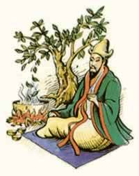

History of Tea
Let us start with the obligatory origin of tea story about how Chinese emperor, Shen Nung was relaxing under a Camellia sinensis tree (yes the tea bushes if left unpruned grow into beautiful trees but the quality of tea would not be that great) while his servant boiled drinking water in a pot. Now picture this, a serene warm afternoon, a mild breeze and some leaves from the tea plant fall into the pot of boiling water. The servant being a bit lazy decided not to boil another pot of water but serve the great emperor the “water” as it were. Thus was served the first cup of Afternoon tea and a tradition was born.
People in India will however swear that tea originated in India and was taken to China by Indian Buddhist saint Bodhi dharma (who is accredited to be the founder of Zen Buddhism) when he left to preach Buddhism in China. Another story that does the rounds is that of Bodhi dharma cutting his eyelids off so that he wouldn't fall asleep while meditating, and from these severed eyelids sprang forth the first tea plants.
Well, this story is not everyone’s cup of tea but you can take your pick depending on what kind of literature you like to read with your cuppa.
Tea was only introduced to the west around 400 years ago by Dutch and Portuguese adventurers who sailed off to find the end of the world and found tea instead. Till now the only form of tea being sold was green. Suddenly in order for tea to be transported a thousand miles away to the West, the tea needed to be processed into black so that they lasted longer. And the Chinese were the first to process black tea too! Tea drinking was initially picked up by the French who then ditched tea for coffee. In other parts of Europe including Britain, tea was considered just a medicinal drink. It was left for a lady with taste, Portuguese princess, Catherine of Braganza, future wife of King Charles II, to make tea drinking a fashion statement among the English when she arrived at court in 1662.Thus began the craze for black tea that sold for fabulous prices and was highly regarded by the bourgeois. So initially only the posh drank tea.
Now since tea was so expensive, some scrupulous criminals decided to earn their gold using tea. They indulged in smuggling and selling tea that was not actually tea—it normally was dried ordinary leaf coloured to look like tea with anything from harsh chemicals to dried poo. Then in the late 1700s, the government reduced the taxes levied on tea from 119 percent to 12.5 percent. This lead to tea being more affordable and gaining popularity as a favourite beverage among all.
Tea would now qualify as ‘the great leveller’.